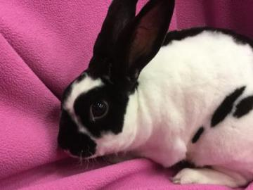

Featured Friends
Every week, we showcase a few of the wonderful animals we are helping to find their forever home. Click on the profiles for more information and 'Add Friend' if you are interested in adopting one. We'll contact you to set up a visit with the animal who could be the next member of your family.
Dougie

- Mini Rex
- Neutered Male
- Age: 4 years
- Weight: 5 lbs
Hi! My name is Dougie.
I was in a shelter that lacked the resources to continue to care for me, so I came to Animal Humane Society to find a new home.
Additional Information
I am a Shy Snuggler! Shy Snugglers are relaxed, gentle and a little bit timid. They adapt fairly quickly to new environments, people and changes in routine, but can be overwhelmed by too much noise or activity. They are affectionate and enjoy human interaction, but also need time alone. They are rarely mischievous and often live harmoniously with other pets. They prefer a calm, quiet home and are a great choice for first-time adopters and homes with gentle children of all ages. They are not the best candidate for agility class or the role of therapy animal, but may enjoy these roles over time.
ID#: 31253658
Location: Golden Valley (Mon-Fri: Noon-8pm / Sat-Sun 10am-6pm)
Adoption Fee: $51.00
Giraffe

- Chow Chow/ Chinese Shar-Pei
- Neutered Male
- Age: 1.5 years
- Weight: 57 lbs
Hi! My name is Giraffe.
I was found as a stray, so I came to Animal Humane Society to find a new home.
People describe me as playful. Playful dogs enjoy playing with toys and often enjoy other busy interactions. We may like a good game of fetch or just quietly chewing on a stuffed animal. No matter which toys we choose, we prefer to include our families in the fun.
People also describe me as energetic. Energetic dogs love to be busy, both physically and mentally. We often enjoy seeing and doing new things with our families and are often best matched with active people. Energetic dogs do best in homes that can provide them adequate exercise and mental stimulation, such as running, hiking, or playing Frisbee.
Lived with children: No
Lived with animals:No
ID#:31183166
Location: Woodbury (Mon-Fri: Noon-8pm / Sat-Sun 10am-6pm)
Adoption Fee: $247.00
Millie

- Domestic Shorthair
- Spayed Female
- Age: 6 years
- Weight: 12 lbs
Hi! My name is Millie.
Someone in my family was allergic to me, so I came to Animal Humane Society to find a new home.
People describe me as shy. Shy cats are loving companions that take longer to acclimate to a new environment. A quieter, low-activity home would allow me the opportunity to get used to new things at my own pace.
People also describe me as independent. Independent cats love to explore their surroundings and need plenty of toys and activity to keep them busy and engaged. We tend not to be demanding for cuddles & kisses and mostly enjoy hanging out with you and being a part of your daily activities. Families with older children are especially suitable for cats like me.
Date surrendered:2016-04-06 15:53:49
Time in former home:6 Years
Declawed:No
Lived with children: No
Lived with animals:Yes (Dogs, Cats)
ID#:31217439
Location: Golden Valley (Mon-Fri: Noon-8pm / Sat-Sun 10am-6pm)
Adoption Fee: $61.00
Tutti

- Domestic Shorthair
- Spayed Female
- Age: 8.5 years
- Weight: 16 pounds
Hi! My name is Tutti.
I required more time and attention than my caretaker could provide and I shed too much, so I came to Animal Humane Society to find a new home.
People describe me as affectionate. Affectionate cats often enjoy close interactions and snuggling. We can also be a little bit shy or bashful as we adapt to a new environment, a process that may be easier in homes that have moderate activity.
People also describe me as easy going. Easy going cats are great additions to just about any home. We adapt fairly quickly to new environments and changes, so if you're in a busier, active household, I might be right for you. We also often get along well with other pets.
If you've ever experienced being picked last at a team draft or a dance, you know how I feel. For some reason, prospective adopters have passed me by without getting to know me and what a great pet I could be if given a chance. The staff and volunteers know how special I am and hope that you consider me when you're looking for a new pet. Some of the activities I enjoy include: Lounging, getting scratched by the ears, laying in the sun.
Date surrendered:2016-02-03 18:55:05
Time in former home:6 Years
Declawed:No
Lived with children: No
Lived with animals:Yes (Cats)
ID#:8751319
Location: Coon Rapids (Mon-Fri: Noon-8pm / Sat-Sun 10am-6pm)
Adoption Fee: $49.00